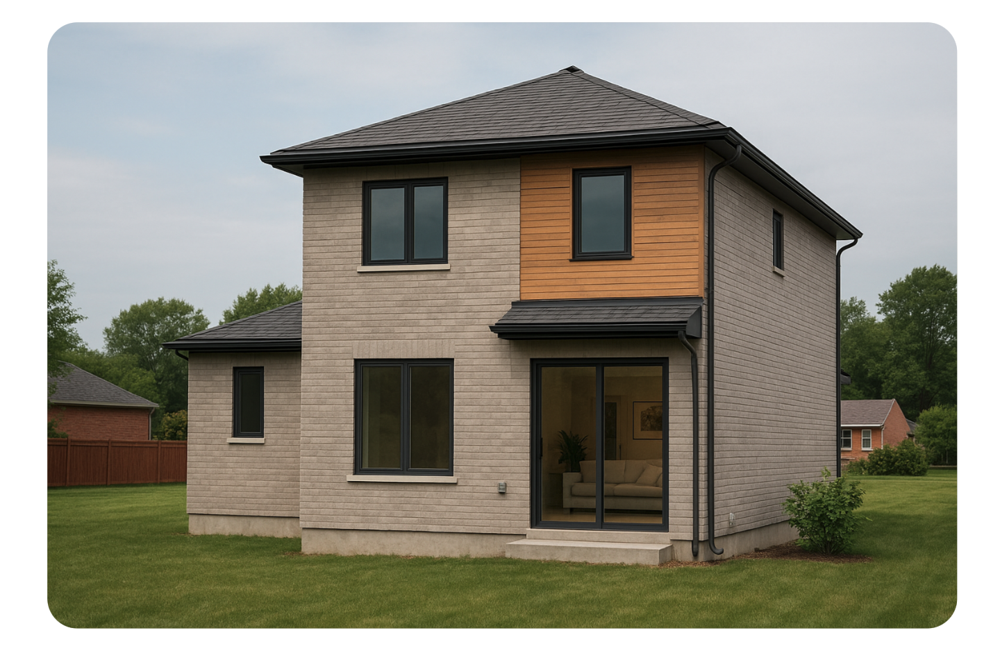
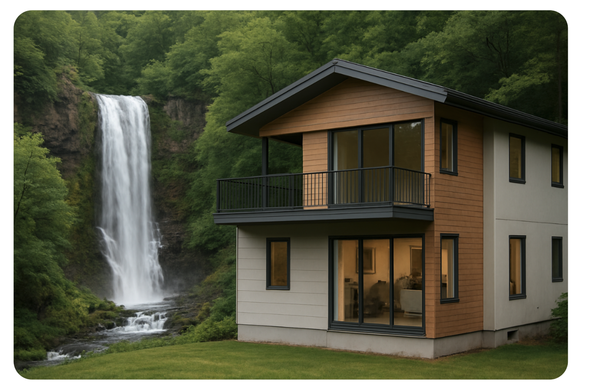
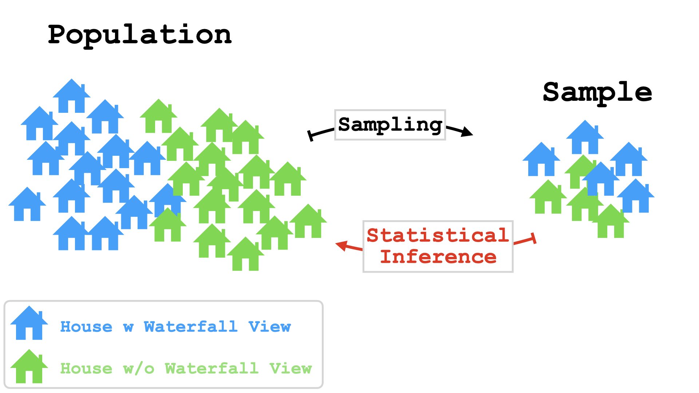
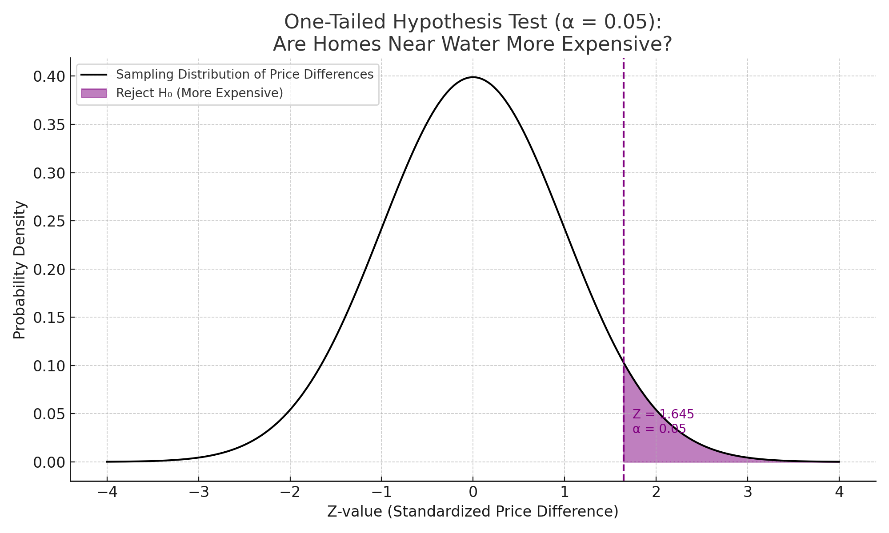
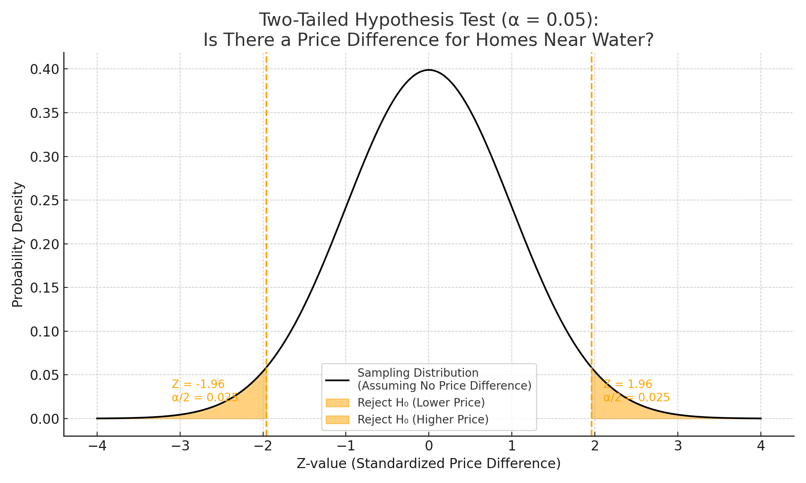
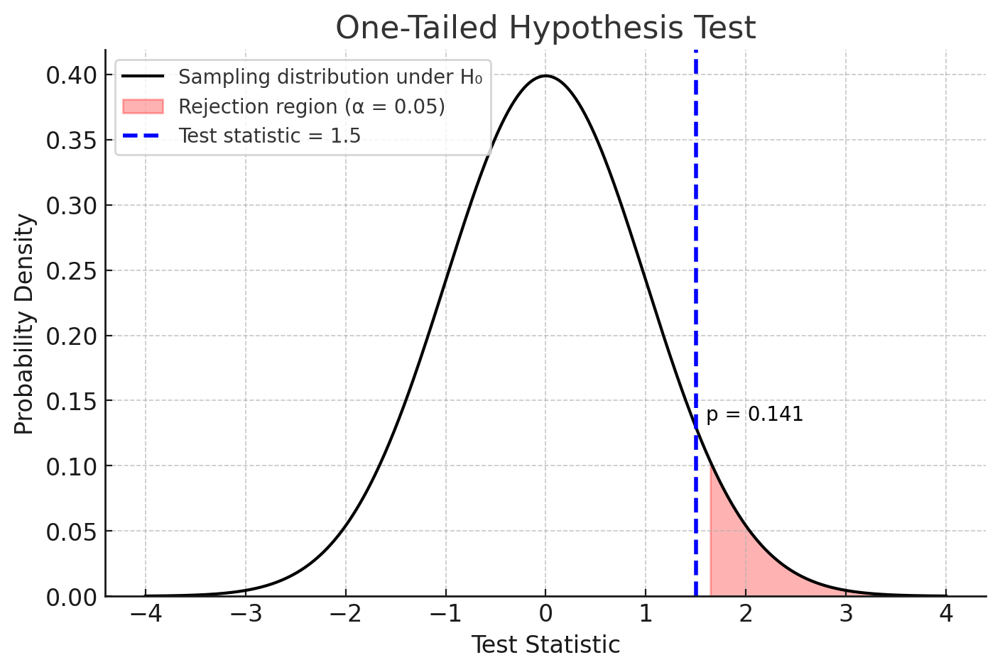
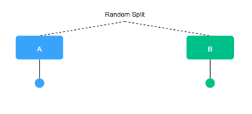

Hypothesis Testing And A/B Testing#
Intro#
Is a Waterfall View Really Worth More?#
"Houses with a waterfall wiew are more expensive than houses without one".


The Problem#
Just seeing a difference in price isn’t enough.
We need to ask:
Is the difference real?
Or could it just be due to random chance?
Hypothesis#
What is a Hypothesis?#
Research process
Topic
Research Question
Hypotheses
Collect Data
Hypothesis Test
Conclusion
How Do We Formulate a Hypothesis?#
🔍 Research Question
- Asks whether there's an effect.
e.g.,"Are homes near waterfall more expensive?". - Broader and more exploratory in scope.
- May not be directly testable as-is; might need to be broken into hypotheses.
💡Hypothesis
- Provides a specific, testable prediction.
e.g., Homes near waterfall have a higher average price per square meter. - Narrow and focused on what you expect to find.
- Designed to be testable through statistical methods.
What is the Null and Alternative Hypothesis?#
💡 Hypothesis
Ask yourself:
- What will change?
- How will it change?
- What will cause the change?
🔀 Two possible Hypotheses
Null Hypothesis (H₀):
There is no difference or effect between two or more groups with respect to a characteristic.
Any observed difference is due to chance.
Example:The price of homes with and without a waterfall view does not differ.
Alternative Hypothesis (H₁):
There is a difference or effect between two or more groups.
Example:
The price of homes with and without a waterfall view does differ.
Types of Hypotheses#
🔄 Non-Directional (Two-Tailed) Hypothesis
States that there is a difference, but does not specify the direction of the difference.
Example (Difference): "There is a difference in average prices between homes with and without waterfall views."
Example (Correlation): "There is a relationship between house size and sale price."
This type of hypothesis is often used when the researcher does not have a specific expectation about the direction of the difference.
➡️ Directional (One-Tailed) Hypothesis
States that there is a difference and specifies the direction of the difference.
Example (Difference): "Homes with waterfall views have higher average prices than those without."
Example (Correlation): "Larger houses are positively correlated with higher sale prices."
This type of hypothesis is used when the researcher has a specific expectation about the direction of the difference.
Hypothesis Testing#
Purpose and Limitations of Hypothesis Testing#
- ✅ A hypothesis test is used to test an assumption about a population using information from a sample.
- 🎯 The goal is to determine whether there is enough evidence to reject the null hypothesis or retain it.
- ⚠️ It never rejects the null hypothesis with absolute certainty.
- 🔄 There is always a probability of rejecting the null hypothesis even if it is actually true.
- 📏 This probability threshold is called the level of significance α (commonly 5%).
- 📊 If the p-value is less than α, we reject the null hypothesis in favor of the alternative hypothesis.

One-Tailed (Directional) Hypothesis Test#
Purpose:
Test for a difference in one direction only.
How it works:
- If your sample result falls in the critical region, you reject the null hypothesis and accept the alternative hypothesis.
- If it does not, you don't reject the null hypothesis (no evidence to support the alternative hypothesis).
Example:
A real estate company claims homes near a waterfall are more expensive.
Hypotheses:
- Null Hypothesis (H₀): μ₁ ≤ μ₂ (True mean price near waterfall is less than or equal to that of homes not near)
- Alternative Hypothesis (H₁): μ₁ > μ₂ (True mean price near waterfall is greater than that of homes not near)

| Sample | Sample Mean (Near Water) | Sample Mean (Not Near Water) | Difference |
|---|---|---|---|
| 1 | 98 | 106 | -8 |
| 2 | 101 | 104 | -3 |
| 3 | 100 | 100 | 0 |
| 4 | 103 | 101 | +2 |
Two-Tailed (Non-Directional) Hypothesis Test#
Purpose:
Test for a difference in both directions.
How it works:
- If your sample result falls in either critical region, you reject the null hypothesis and accept the alternative hypothesis.
- If it does not, you don't reject the null hypothesis (no evidence to support the alternative hypothesis).
Example:
A real estate company claims homes near a waterfall are either more or less expensive.
Hypotheses:
- Null Hypothesis (H₀): μ₁ = μ₂ (True mean price near waterfall is equal to that of homes not near)
- Alternative Hypothesis (H₁): μ₁ ≠ μ₂ (True mean price near waterfall is different from that of homes not near)

| Sample | Sample Mean (Near Water) | Sample Mean (Not Near Water) | Difference |
|---|---|---|---|
| 1 | 98 | 102 | -4 |
| 2 | 101 | 99 | +2 |
| 3 | 100 | 100 | 0 |
| 4 | 103 | 97 | +6 |
Understanding the p-value#
Purpose:
Used to decide whether to reject or retain the null hypothesis.
Definition:
The p-value is the probability (assuming the null hypothesis is true) of obtaining a sample result
at least as extreme as the one observed.
Decision rule:
- If p-value ≤ α (e.g., 0.05), reject H₀.
- If p-value > α, do not reject H₀.
Notes:
- Smaller p-values give stronger evidence against H₀.
- The p-value is not the probability that H₀ is true.

| Sample | Test Statistic | p-value | Decision (α = 0.05) |
|---|---|---|---|
| 1 | 2.10 | 0.041 | Reject H₀ |
| 2 | 1.50 | 0.141 | Do not reject H₀ |
| 3 | 2.85 | 0.006 | Reject H₀ |
Common Hypothesis Tests#
| Test | Purpose | When to Use | Type |
|---|---|---|---|
| One-Sample t-Test | Tests if the sample mean differs from a known value. | Compare average house price in one neighborhood to a known county average. | Parametric |
| Two-Sample t-Test (Independent) | Tests if the means of two independent groups differ. | Compare average prices of houses with waterfall views vs. without. | Parametric |
| Paired t-Test | Tests if the means of two related measurements differ. | Compare house prices before and after renovations on the same properties. | Parametric |
| Wilcoxon Signed-Rank Test | Non-parametric alternative to the paired t-test. | Compare house prices before and after renovation when data are not normally distributed. | Non-Parametric |
| Chi-Square Test | Tests for association between categorical variables. | Check if having a pool is associated with being in a specific neighborhood. | Non-Parametric |
| ANOVA (Analysis of Variance) | Tests if means differ across three or more groups. | Compare average prices across urban, suburban, and rural areas. | Parametric |
| Kruskal-Wallis Test | Non-parametric alternative to ANOVA. | Compare average prices across urban, suburban, and rural areas when data are not normally distributed. | Non-Parametric |
| Correlation Test (Pearson) | Tests linear relationship between two continuous variables. | Check if house size is related to house price. | Parametric |
| Correlation Test (Spearman) | Tests monotonic relationship between two variables. | Check if house rank in size is related to rank in price. | Non-Parametric |
A/B Testing#
🆎 Introduction to A/B Testing#
What is A/B Testing?
A/B Testing is an experiment where you compare two versions (A and B) of something to see which performs better.
Why We Use It
- To make data-driven decisions instead of relying on guesswork.
- To improve performance and user experience.
- To validate design, content, or product changes before full rollout.
How A/B Testing Works#
How it Works
- Randomly split your audience into two groups.
- Show group A one version and group B another version.
- Measure the outcome (click rate, purchase rate, etc.).
- Use a statistical test (often a two-sample proportion test or t-test) to see if the difference is significant.
Example
💻 A company tests two landing page designs:
- Version A: Without Chatbot
- Version B: With Chatbot
Measure which version leads to more sign-ups.

Key Points
- H₀: No difference between A and B.
- H₁: One version performs better.
- Significance level (α).
Why Random Assignment#
It ensures that the groups are comparable and any differences in outcomes are likely due to the change you made — not to pre-existing differences.
Why It Matters
- Removes Selection Bias – Ensures both groups start out similar.
- Balances Confounding Variables – Distributes known and unknown factors evenly.
Without random assignment, differences may be due to who’s in the groups — not the change you made.
Interpreting A/B Test Results#
Key Outputs from an A/B Test
- p-value – Probability the observed difference happened by chance.
- Confidence Interval (CI) – Range of likely true differences.
- Effect Size – Magnitude of the difference (practical significance).
Example Results
| Metric | Version A | Version B |
|---|---|---|
| Conversion Rate | 8.0% | 9.5% |
| p-value | 0.032 | |
| 95% CI | [0.2%, 2.8%] | |
| Effect Size | +1.5 percentage points | |
How to Interpret
- p-value < 0.05 → Reject H₀.
- CI entirely positive → B likely better than A.
- Effect Size → Shows practical relevance.
Here, Version B is statistically and practically better than Version A.
Key Takeaway
Statistical significance (p-value) is not enough — always check the effect size and the confidence interval.
Conclusion - Hypothesis Testing & A/B Testing#
Key Takeaways
- Both Hypothesis Testing and A/B Testing help make data-driven decisions rather than relying on guesswork.
- Every test starts with a clear null hypothesis (H₀) and alternative hypothesis (H₁).
- The p-value tells us how likely it is to observe the data (or more extreme) if H₀ were true — but it’s not absolute proof.
- Statistical significance doesn’t always mean practical significance — always check effect sizes and context.